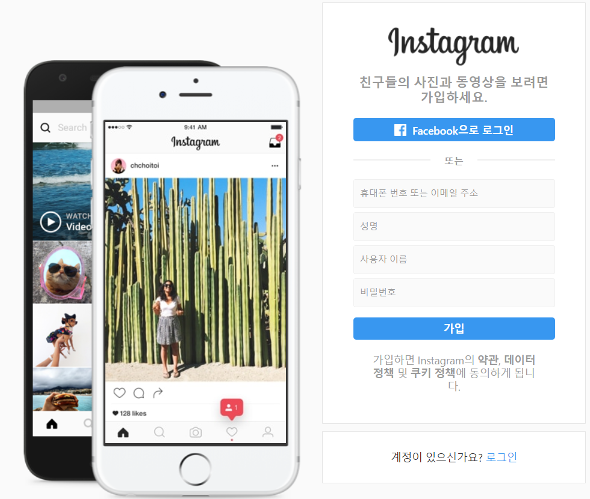

Facebook
Youtube
Instagram
Twitter
인스타그램(Instagram)이란?

무료 이미지 및 동영상 공유 응용 소프트웨어로, 2010년 케빈 시스트롬(Kevin Systrom)과 마이크 크리거(Mike Krieger)가 개발하였다. 해시태그(hashtag)를 추가하여 사용들이 사진이나 친구를 손쉽게 찾을 수 있도록 하였으며 2012년 4월 페이스북에 10억 달러에 인수되었으며, 인수 후에도 독립적으로 운영되고 있다.
사용자들은 사진이나 동영상을 업로드하고 이를 팔로워(follower)나 친구들과 공유할 수 있다. 또한 다른 친구들이 공유한 게시물을 보고, 댓글을 남기며, 좋아요를 누를 수 있다.
인스타그램에서는 사진을 찍어 다양한 필터(filter) 효과를 적용할 수 있도록 하는데, 노멀(Normal), 1977, 아마로(Amaro) 등을 포함한 25개 이상의 필터를 제공하고 있다. 사용자들은 이미지에 위·경도나 위치명으로 지오태그(geotag)를 달 수 있으며, 인스타그램은 매해 태깅된 장소 중 상위 10개의 장소를 발표하고 있다.
인스타그램의 다이렉트(Instagram Direct)라는 기능은 사용자들이 내용을 모두에게 보여주는 것이 아니라 특정 사용자나 그룹만 지정하여 보내는 기능이다. 원래 인스타그램은 폴라로이드를 연상시키는 사각형 모양의 사진 크기를 특징으로 하였으나 2015년 8월부터는 사각형이 아닌 사진들도 사용할 수 있도록 지원하고 있다.